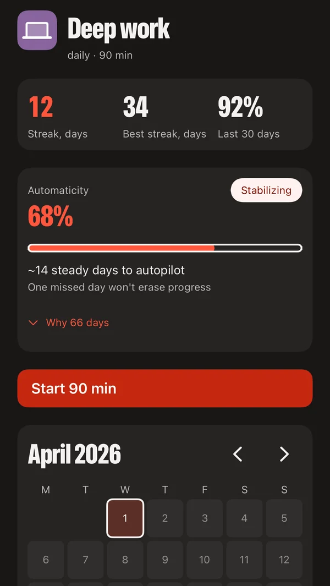
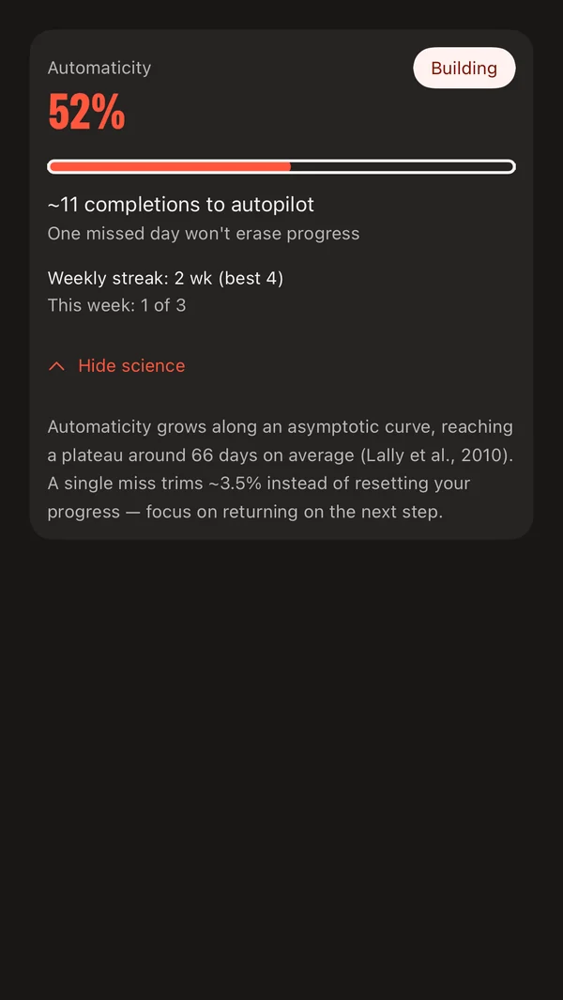
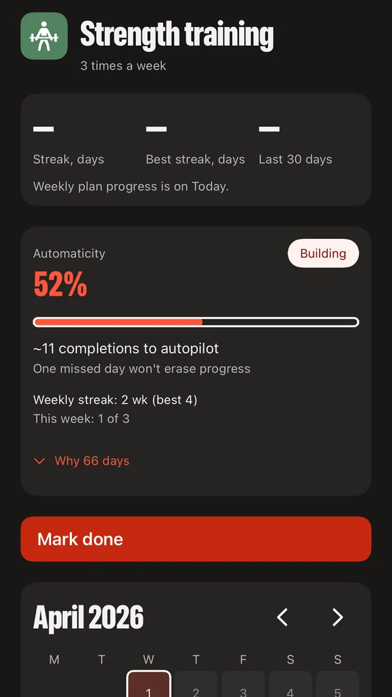
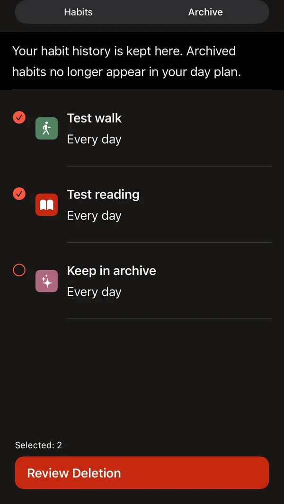
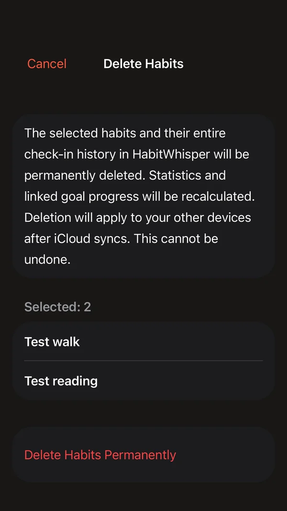
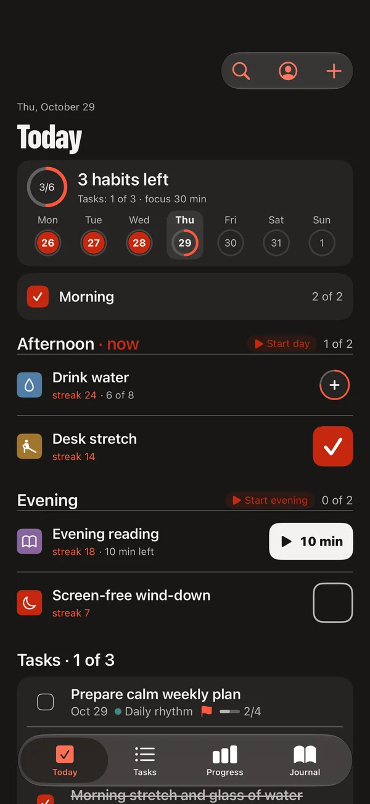
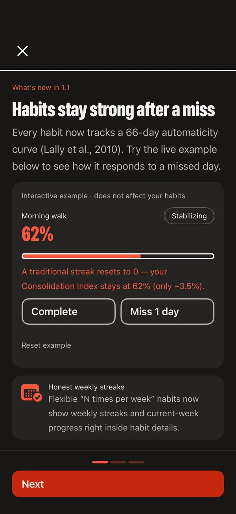

What’s new in HabitWhisper 1.1
Your habits now grow along a realistic 66-day automaticity curve instead of fragile streaks — alongside a system-wide Consolidation Map, honest weekly streaks, manual archive cleanup, and four new languages.
- 66-day Consolidation Index
- Consolidation Map
- Weekly streaks
- Archive cleanup
- 6 languages

66-Day Consolidation Index
One missed day no longer erases weeks of real progress. Every habit now calculates its automaticity score (0–100%) from your existing check-in history.
What improved
- Realistic asymptotic curve: habits strengthen fastest in the first weeks and stabilize near autopilot around ~66 repetitions.
- Gentle misses: a single missed day trims about 3.5% instead of dropping your score to zero.
- Partial effort counts: counter and timer habits credit partial progress proportionally toward consolidation.
- Four clear phases: Start, Building, Stabilizing, and Autopilot (85%+), plus an estimate of remaining repetitions.
How to use it
- Open any habit from Today or the Habits Catalog.
- Review the Automaticity card right below your summary metrics — it is already computed from your past check-ins.
- Tap Why 66 days inside the card to expand the explanation of the curve and phases.


Consolidation Map & Autopilot Forecast
See how resilient your entire routine is in one glance — average index, how many habits have reached autopilot, and which habit is closest next.
What improved
- System-wide summary: tracks your average Consolidation Index and total habits on autopilot.
- Autopilot forecast: highlights which habit is closest to reaching 85% and roughly how many steps remain.
- Phase breakdown & quick jump: filter at a glance across Start, Building, Stabilizing, and Autopilot, and tap any habit row to open its details and calendar.
How to use it
- Open the Progress tab and stay on Overview.
- Scroll to Consolidation Map to see your overall score and habit breakdown.
- Tap any habit row to jump directly into its detail screen and monthly calendar.
Honest Weekly Streaks (“N times per week”)
Habits like strength training 3×/week aren’t meant to be done every day. HabitWhisper now measures them by completed weeks instead of breaking a daily chain on rest days.
What improved
- True weekly streak counter: tracks consecutive completed weeks and your all-time best weekly streak.
- Current-week visibility: shows live progress (for example, This week: 1 of 3) directly inside the Consolidation card.
- Respects your week start: honors your Monday/Sunday setting from Settings → Week starts on.
How to use it
- Create or edit a habit and choose the Times per week schedule (e.g., 3 times a week).
- Complete it on whichever days fit your week — rest days won’t penalize you.
- Open the habit card anytime to see your Weekly streak, personal best, and current-week count.

Manual Permanent Archive Cleanup
Keep meaningful finished habits in your archive forever — and permanently remove test entries or outdated experiments whenever you want a clean slate.
What improved
- Multi-select deletion: pick one or several archived habits at once and review the exact list before confirming.
- Clean recalculation: permanently deletes selected habits and their check-in logs, recalculates linked goal progress, and syncs deletion across your iCloud devices.
- Safe by default: deletion is only possible from the Archive tab with an explicit confirmation step — no accidental swipes.
How to use it
- Open Habits Catalog and switch the top filter to Archive.
- Tap Select in the top bar and mark the archived habits you want to remove.
- Tap Review Deletion to inspect the selected items and what will be recalculated.
- Confirm with Delete Habits Permanently (this action cannot be undone).


Four New Languages & Interactive In-App Tour
HabitWhisper 1.1 adds full native localization for four more languages across iPhone, widgets, Live Activities, Apple Watch, and Mac — plus a quick interactive tour right after updating.
- English
- Русский
- Español (México)
- Português (Brasil)
- Deutsch
- Français
What improved
- Full 6-language coverage: every screen, widget, notification, Live Activity, Watch companion, and Mac companion is translated with proper pluralization and date formatting.
- Interactive What’s New tour: existing users see a brief 3-step highlight sheet once after updating, including a safe miss simulator that never changes your data.
- Gentle contextual tips: native iOS tips quietly point out the Consolidation Map and Archive Select button the first time you visit those screens.
How to use it
- Switch language anytime in Settings → Language — independently from your iPhone’s system language.
- Want to revisit the 1.1 walkthrough later? Open Settings → About → What’s new in 1.1.
- Dismiss any contextual tip with a single tap, or try the action it points to and it clears automatically.


Everything included in HabitWhisper 1.1
- 66-day Consolidation Index on every habit detail screen (Free).
- Consolidation Map & autopilot forecast in Progress → Overview (Free preview, full map in Pro).
- Honest weekly streaks and current-week counts for flexible “N times per week” habits.
- Multi-select permanent deletion of archived habits with confirmation and iCloud sync.
- Four new languages: Spanish (Mexico), Portuguese (Brazil), German, and French (6 total).
- Interactive 3-step What’s New tour (replayable in Settings) and native TipKit contextual tips.
Still calm, private, and yours
- Zero accounts, zero ads, zero trackers: all habit consolidation math runs locally on your iPhone.
- Private iCloud sync: your history stays in your personal Apple iCloud container.
- Zero database migration hassle: your existing check-in history from 1.0 feeds the 66-day curve automatically on first launch.
- No intrusive pop-ups: the 1.1 tour appears once for returning users and yields automatically if you open the app from a widget or shortcut.
Ready for a calmer rhythm?
Update HabitWhisper on the App Store for iPhone and iPhone Duo.
Available on theApp Store Questions or feedback?